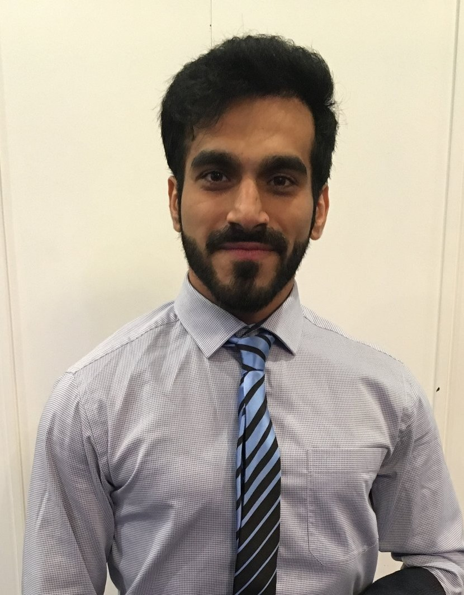

From SAP delivery in India to enterprise business analysis at ANZ and Colonial First State, I've spent a decade turning complexity into structured, trustworthy delivery — most recently leading AI governance for a live enterprise pilot, and building AI products of my own along the way.

"My work sits at an unusual intersection: a decade earning the trust of risk and compliance teams inside regulated enterprises, paired with hands-on technical delivery — from enterprise systems to, more recently, AI products I've built myself. That range, not any single skill, is what I bring to complex delivery problems."
Progressed from Associate Software Engineer to Business & Integration Architecture Senior Analyst — moving from hands-on SAP ABAP development to client-facing technical leadership across sites in Punjab, Haryana, and Uttar Pradesh. Led independent delivery for major clients including Trident Group and Dabur India Ltd, including a large-scale GST integration project, while collaborating across teams ranging from 5 to over 100 members as the point of contact between stakeholders and developers. Ran boot camp training and mentored new team members, and won the "Numero Uno" performance award in 2016.
Across these engagements, collaborated with teams ranging from 5 to over 100 members, serving as the point of contact between stakeholders and developers and documenting specifications for business intelligence and IT reports and dashboards.
Pursued a Master of Business Information Systems at Monash University, completing two industry projects: an IoT smart device addressing water scarcity in Victoria (high distinction), and a data analysis project on declining Victorian reservoir levels using R, Tableau, and Power BI — also earning a high distinction and an offer for a Research Assistant role. Took on mentoring roles alongside study, serving as an IT Peer Mentor and later a Postgraduate Association Mentor, organising orientation activities and seminars for incoming students.
Taught Website Fundamentals to undergraduate cohorts of 15–20 students as a Sessional Teaching Associate (Mar–Jul 2019) — covering full-stack concepts from SQL to JavaScript and PHP, grading assessments, and providing one-on-one consultations to support student learning outcomes. Took on a brief Business Analyst engagement at Comprara Pty Ltd, a procurement consulting firm — wireframing a new business website and mapping business processes. Completed a Professional Year program (2020–2021) to formalize local industry readiness.
Joined ANZ as a Business Analyst on anz.com, facilitating Agile ceremonies and managing the sprint backlog for the Product Owner while leading solution design on the AEM platform — enhancing the digital sales experience and content management capabilities for anz.com.au. Pulled into Policy Governance for a focused stint (Feb–Apr 2021), meticulously reviewing and standardising roughly 800 policies and schedules against ANZ's governance framework and managing the policy publication workflow. Returned to anz.com to continue driving platform enhancements, progressing to Business System Analyst, and contributed to the migration of on-premise customer footprint features to Google Cloud Platform.
Now a Senior Specialist Business Analyst at LTM (formerly LTIMindtree), a global IT services and consulting firm, leading the superannuation wrap platform transition for Colonial First State, an Australian wealth management and superannuation provider. Led business analysis for CFS Edge Adviser AI – Phase 1 — a controlled pilot limited to a select group of licensees and practices — setting AI prompt scope and compliance guardrails across Product, Risk, Compliance, Change, and FNZ. With Phase 1 complete, the programme is now expanding to the full CFS Edge adviser base, carrying that same oversight foundation to enterprise scale, alongside regular feature delivery across CFS Edge's quarterly release cycle. Also serves as the sole Business Analyst for "Small Changes" — a continuous-improvement initiative that captures overlooked pain points from advisers, operations, and product teams and delivers the small, high-impact ones through quick dot releases outside the normal release cycle. In parallel, founded Nambik AI, an independent AI consultancy — its first engagement delivering a live production voice agent for a print industry client — and built an AI Digital Mentor (RAG app on the Anthropic API). Currently completing the Outskill AI Catalyst Program.
Progression across the full CFS Edge platform lifecycle, before the AI initiative began:
How the governance actually worked: five stakeholder groups converging into one controlled pilot, now expanding to the full adviser platform.
I'm a business analyst who's spent over a decade translating ambiguity into structure — first in enterprise software delivery, now increasingly at the intersection of business analysis and applied AI. My current focus is responsible AI adoption: helping regulated organizations move from AI curiosity to AI capability without cutting corners on compliance or trust.
My path wasn't linear by design — it became one through consistency. I started as a developer in India, rebuilt my career from scratch after moving to Australia — including a Master's degree, a stint teaching, and a few years working retail to make ends meet along the way — and worked my way back into enterprise BA roles at ANZ and now Colonial First State. That period of starting over taught me more about adaptability than any single job title has.
AI is moving faster than most organizations' risk and compliance structures can keep up with. I've spent the last two years making sure that gap gets closed responsibly — at work, through the CFS Edge Adviser AI programme, and independently, by building real AI products so I understand the technology from the inside out. That independent work is now taking shape as Nambik AI, an early-stage AI consultancy I'm building alongside my day job.
Whether you're exploring responsible AI adoption for a regulated platform, need someone who can bridge business analysis and hands-on AI delivery, or just want to compare notes on shipping real AI products — I'd like to hear from you.
Based in Melbourne, Australia